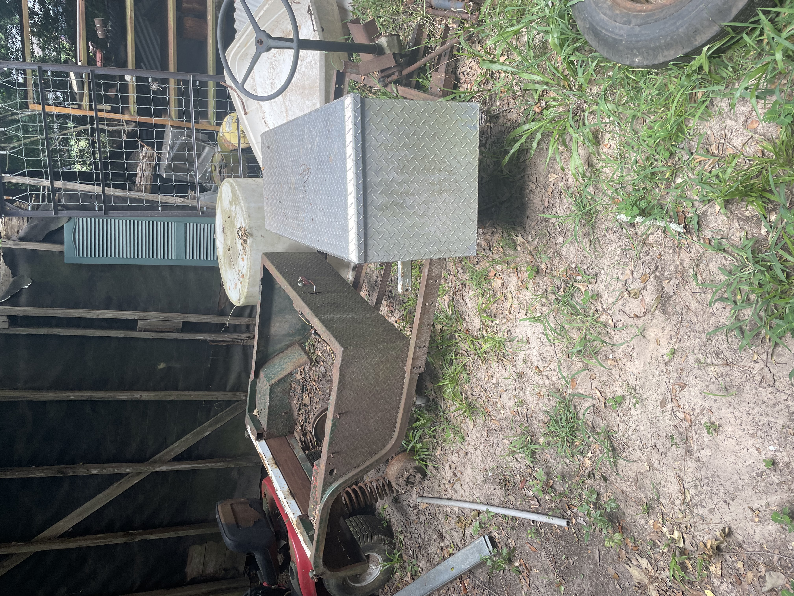
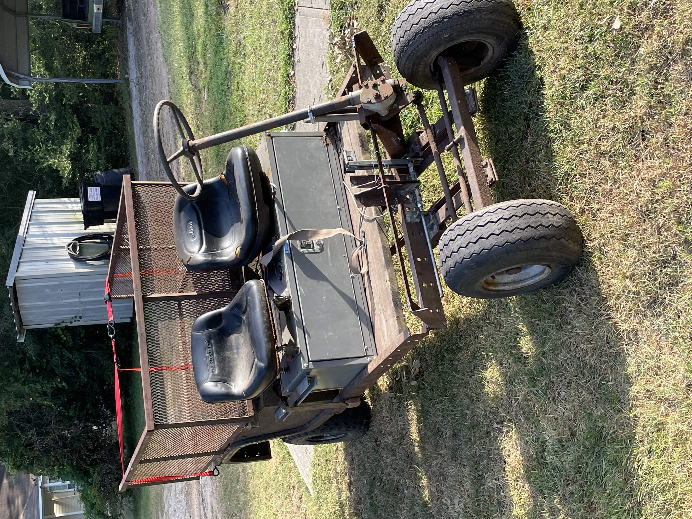
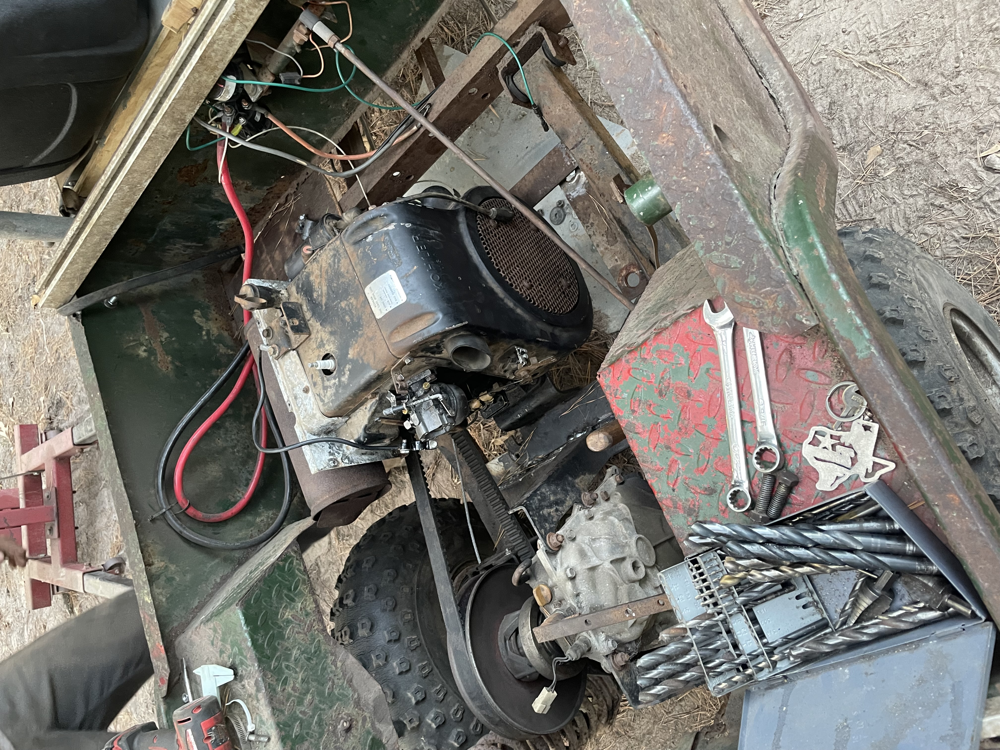
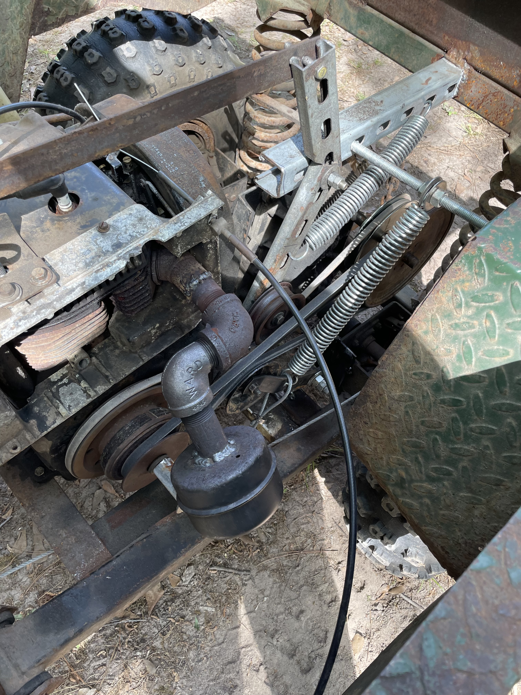
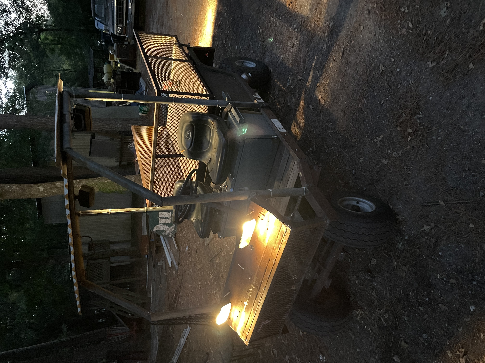
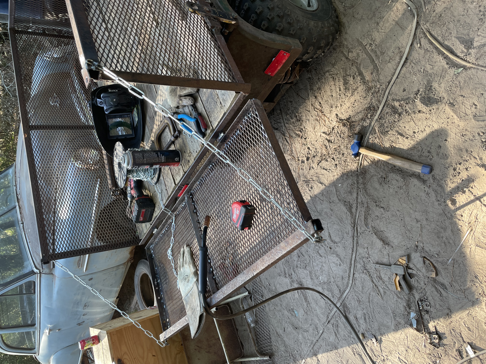

The Cushman GT
Inspiration struck when we found a salvaged 1990s Cushman GT frame. From there I quickly began rendering an Idea in CAD (cardboard aided design).
Physics Student | Machinist | Mechanical Design & Fabrication
Early in the summer of 2023 my younger brother and I had undertaken a number of landscaping projects for our elderly neighbors. It was at this time that tropical storm hit the neighborhood hard. We put our little John Deere 216 garden tractor to work pulling a trailer and helping with the cleanup efforts. The '216' was too wore out to continue the work we were asked of it, and so we were inspired to build something more substancial.

Inspiration struck when we found a salvaged 1990s Cushman GT frame. From there I quickly began rendering an Idea in CAD (cardboard aided design).

We knew we wanted to deisgn our utility vehcile similar to a John Deere Gator, having 2 seats, a dumping bed, and a tailgate. The main contraint for the project was an extremely tight operating budget; thus everything was made out of scrap iron. The first main prototype for the vehicle included an 8hp gas engine and an old cvt that had originaly belonged to the Cushman GT.

The 8hp engine proved to be unreliable and underpowered; in addition, the parts it needed such as its fuel pump were out of our budget. Because there is no replacement for displacement we decided to swap in the 16hp motor from our John Deere 216 garden tractor. This meant we had to build new motor mounts, reassess our fuel and ignition systems, and redo our throttle and choke linkages.

Unsurpisingly doubling our horsepower and ungoverning the engine were cause for our cvt to fail. The cvt could not sustain the low end torque required for us to remove fellen trees and could not handle the RPMs needed for traveling at road speed. Every design change we made throughout this enitre build process was rigorously tested during through our landscaping work. So I desgined a simple v-belt transmission that utilized a foot clutch and a torque advantages pully ratio. It worked extremely well, the machine never stalled and had enough power to do everything we needed; however, its top speed was only ~8mph. So we added a second set of pullyes and a second belt, this time with a 1:1 ratio designed for speed. We also added a second tensioner clutch as a hand lever. This transmission proved incredbly relible having a low gear with enough torque to move from a dead stop with a bed load of logs and a high gear capable of reaching 20mph.

Our utility vehicle was affectionatly termed "The Buggy". This was to highlight the fact that it looks like a jelopy; a hodge-podge of scap bits and pieces. From its glovebox made from a mailbox to its tin roof, the Buggy is the epitomy of redneck engineering. This project tought me the connection between mechanical design and practical problem solving. Every peice of the buggy tought me to think like an engineer. I learned to asses the problem at hand and the constraints before me and produce a real solution. When a solution failed I learned to treat the root cause and not the symptom until a reliable system was formed. It was through this process of itereative design that the buggy was able to successfully achive its purpose.

